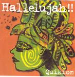

| Artist: | Quikion |
| Title: | Hallelujah!! |
| Label: | Poseidon Records PRM-001 |
| Length(s): | 32 minutes |
| Year(s) of release: | 1997 |
| Month of review: | [12/2003] |
| 1) | Hallelujah!! | 5.28 |
| 2) | Voyage (translated from Japanese) | 4.41 |
| 3) | The Music Box (translated from Japanese) | 6.33 |
| 4) | Train Song | 4.08 |
| 5) | Summer Time (translated from Japanese) | 5.08 |
| 6) | TV | 5.41 |